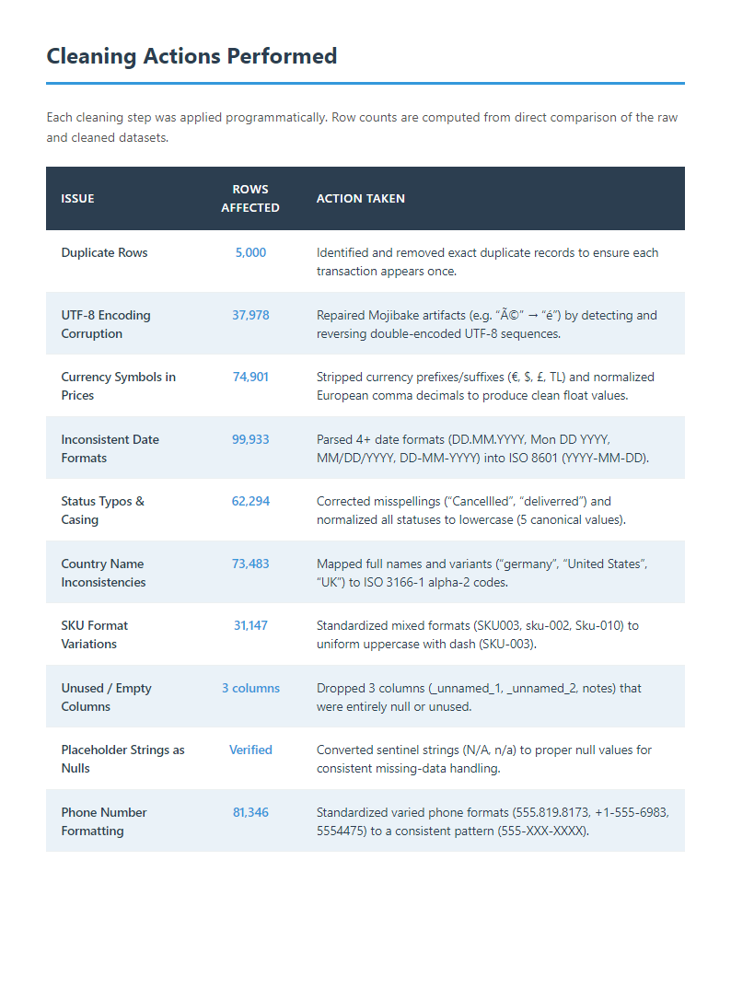

End-to-end data science work, from raw data to actionable results.

Built an automated pipeline to clean and standardize a 125K-row e-commerce dataset. The workflow detects and resolves eight categories of data quality issues, including missing values, duplicate records, inconsistent formatting, and outlier prices, producing an analysis-ready output with full before/after documentation.
Agent-based framework for generating behaviorally coherent synthetic student data for Open & Distance Learning research. Simulates student populations using persona-driven agents grounded in 9 established theoretical frameworks (Tinto, Bean & Metzner, Rovai, Moore, Garrison, Bäulke, SDT, and more). Features multi-semester simulation with carry-over, peer network contagion, academic exhaustion modeling, and 17+ statistical validation tests.
Interactive analytics dashboard built with Python Dash & Plotly for exploring e-commerce data. Features real-time filtering, multi-dimensional visualizations, and key business metrics at a glance.